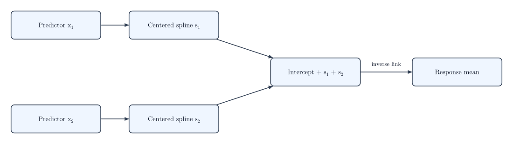
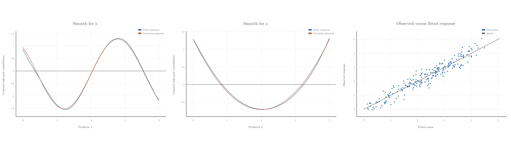

Gaussian GAM with two additive smooths
Abstract
Simulate a continuous response with a sinusoidal effect of one predictor and a quadratic effect of another. Fit two centered cubic P-splines and compare the fitted response and component curves with the observed data and the generating functions.
From predictors to response
#include <dm/dm.hpp>
int main() {
std::filesystem::create_directories("build");
datamunge::graphics::Diagram()
.node("x1", {0, 2}, "Predictor x₁")
.node("x2", {0, -2}, "Predictor x₂")
.node("s1", {5, 2}, "Centered spline s₁")
.node("s2", {5, -2}, "Centered spline s₂")
.node("sum", {11, 0}, "Intercept + s₁ + s₂")
.node("mean", {17, 0}, "Response mean")
.edge("x1", "s1").edge("x2", "s2")
.edge("s1", "sum").edge("s2", "sum").edge("sum", "mean", "inverse link")
.save_svg("build/additive_predictor.svg");
}
Simulate, fit and predict
#include <dm/dm.hpp>
namespace st = dm::stats;
using dm::graphics::RLayout;
using dm::graphics::RPlot;
int main() {
dm::set_seed(42);
const auto x = dm::runif(-2, 2, 220);
const auto z = dm::runif(-2, 2, 220);
const dm::Vector<> effect_x = 1.4 * dm::sin(2.0 * x);
const dm::Vector<> effect_z = 0.5 * z * z;
const dm::Vector<> y = 1.5 + effect_x + effect_z + dm::rnorm(0, 0.3, x.size());
const auto model = st::fit_gam(y, {x.values(), z.values()},
{.smooths = {{.basis_size = 12, .lambda = 0.4}, {.basis_size = 8, .lambda = 1}}});
if (!model.converged()) throw std::runtime_error("GAM did not converge");
const auto grid = dm::seql(-2, 2, 120);
const dm::Vector<> truth_x = 1.4 * dm::sin(2.0 * grid) - dm::mean(effect_x);
const dm::Vector<> truth_z = 0.5 * grid * grid - dm::mean(effect_z);
auto sx = model.plot_smooth(0).title("Smooth for x")
.lines(grid, truth_x, "Generating component", {182, 83, 29});
auto sz = model.plot_smooth(1).title("Smooth for z")
.lines(grid, truth_z, "Generating component", {182, 83, 29});
const auto [lo, hi] = std::minmax_element(y.begin(), y.end());
auto fit = RPlot::create().points(model.fitted_values(), y, "Observations", {36, 105, 172}, 3)
.lines({*lo, *hi}, {*lo, *hi}, "Identity", {100, 100, 100})
.title("Observed versus fitted response").x_label("Fitted mean").y_label("Observed response");
std::print("Converged in {} updates. Training RMSE {:.3f}.\n",
model.iterations(), std::sqrt(model.deviance() / y.size()));
std::filesystem::create_directories("build");
RLayout::create(1, 3).size(1440, 425).add(sx).add(sz).add(fit).save_svg("build/gaussian_gam.svg");
}Converged in 2 updates. Training RMSE 0.316.

Interpretation
The generating functions are centered over the observed training predictors to match the fitted model's identification constraint. The spline dimension determines the available shapes. The supplied difference penalty controls their roughness.